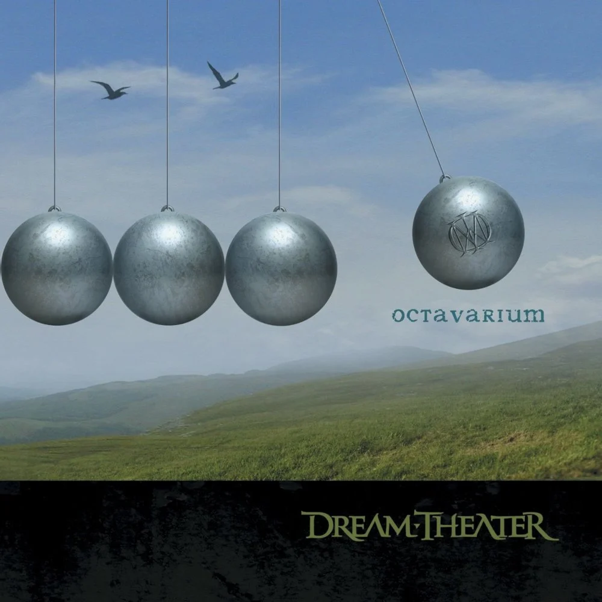
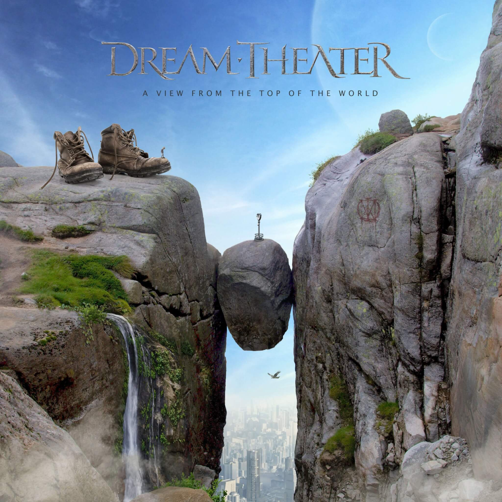

When Dream and Day Unite (1989)Images and Words (1992)Awake (1994)Falling Into Infinity (1997)Metropolis Pt. 2: Scenes from a Memory (1999)Six Degrees of Inner Trubulence (2002)Train of Thought (2003)

Ocatavarium (2005)Systematic Chaos (2007)Black Clouds and Silver Linings (2009)A Dramatic Turn of Events (2011)Dream Theater (2013)The Astonishing (2016)Distance Over Time (2019)

A View from the Top of the World (2021)